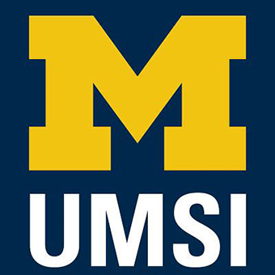

Reach out to client
Initial Client Email ExamplesPlug-and-play email templates for first contact with clients and partners.

Establishing professional communication, conducting initial meetings, and finalizing partnership agreements.
First impressions shape the trajectory of a partnership. The starting phase is where abstract project ideas turn into structured, professional commitments. By establishing clear team contracts, co-creating agendas, and aligning on project scope early, you build psychological safety within your team and trust with your client. Learning how to navigate early ambiguity is one of the most valuable professional capabilities you will gain at UMSI.

UMSI students meet with community partners for engaged learning project
Engaged learning projects can change as new needs, constraints, and insights emerge. Find guidance for the stage of work you are navigating now.
Plug-and-play email templates for first contact with clients and partners.
Step-by-step structure for running a professional kickoff call.
Principles for building reciprocal, respectful community relationships.
Standard guidelines for managing expectations and deliverables.
Formal contract establishing roles between student teams and ELO.
Overview of key milestones, deadlines, and submission dates.